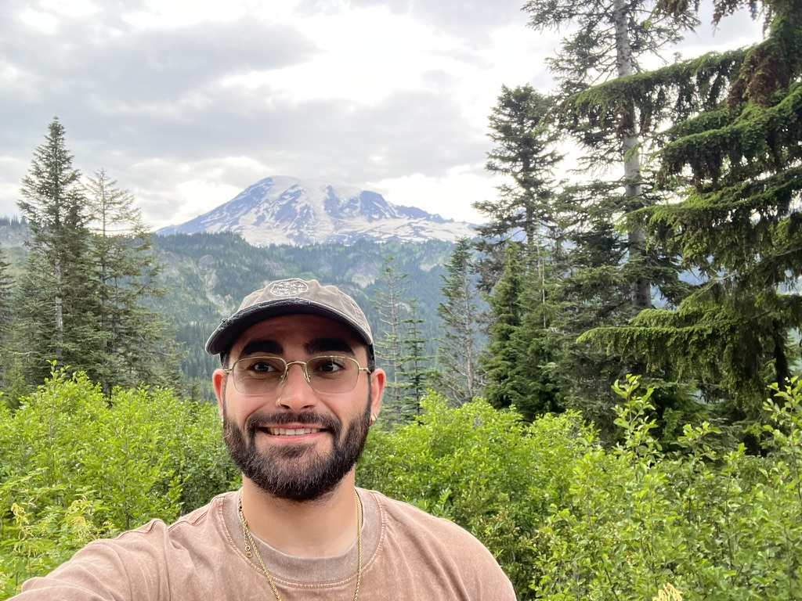

About me
Hi! I’m Pedram Abedi, a postbaccalaureate research assistant in the Department of Astronomy at the University of Michigan.
I study strong gravitational lensing by galaxy clusters, with broader interests in dark matter, galaxy evolution, and cosmology. I earned a Bachelor of Science from Michigan with majors in Astronomy and Astrophysics and Interdisciplinary Physics, graduating with Highest Honors in Astronomy and Astrophysics and with Distinction overall.
My path into astronomy
I’m originally from San Diego, California. My interest in physics began during my senior year of high school in Mr. Daniel Lavine’s AP Physics class. His enthusiasm and care made my first real exposure to the subject memorable, introducing me to how physics could help me understand the world around me. Astronomy offered a way to take those questions further, with the Universe serving as a laboratory to push our knowledge beyond Earth. I began college at the University of California, Merced, before transferring to Michigan, where research amplified my curiosity of the Cosmos.
I started working with Dr. Eric Bell on nearby stellar systems and later joined Dr. Keren Sharon’s strong gravitational lensing group. Developing my own analysis tools, investigating unfamiliar problems, and working across both groups helped me find confidence as a researcher. My mentors welcomed questions I once hesitated to ask and trusted me with increasing responsibility. Today, I build lens models and analysis tools enabling investigations of distant galaxies and the clusters magnifying them. As I continue exploring the Universe, I hope to offer others the encouragement that helped me find my own place in research. You can learn more about my projects on my research page.
A personal note
I’m a first-generation college graduate and the child of Iranian immigrants. I come from a large, loud, and wonderful family, and spending time with them is one of my favorite things. We are a close-knit group, and that sense of connection is an important part of my life.
Outside of research, I enjoy spending time with friends and family, going to the gym, and getting out in nature. Music is another big part of my life; I listen across genres and enjoy discovering the stories and experiences behind the songs. Whether through music, a classroom, or a conversation, I value opportunities to learn from people whose backgrounds and perspectives differ from my own.

Get in touch
I’m always happy to connect with others interested in astronomy. You can find my email, professional profiles, and CV on my Contact page.